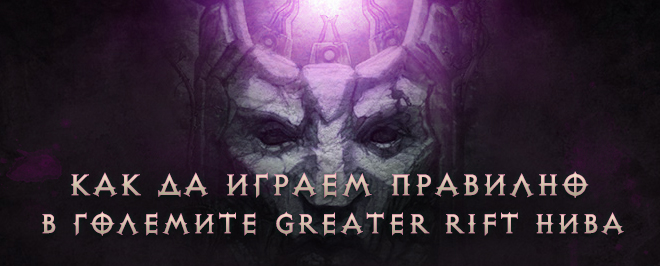

- Да, научих неща които не знам. [6 гласа - 55%]
- Темата е полезна за нови играчи. [3 гласа - 27%]
- Не. [0 гласа - 0%]
- Това са пълни глупости, влизай и си пуцай куме. [2 гласа - 18%]
 Анкета: Полезна ли Ви беше темата
Анкета: Полезна ли Ви беше тематаОбщо гласували: 11 души
Активни
Diablo 3 [ Общи дискусии ]

Офлайн
Benifios

Adramelech
4856
Diablo 3 Клан: battle tag battle tag
<PinCode52>  |
Как да играем правилно в големите GR нива
ОфлайнАвтор: Benifios на 12/09/2017 - 15:16ч. | Benifios на 12/09/2017 - 16:22ч.  Целта на ръководството е да Ви даде полезни съвети и разкрие някои от "тайните" в играта. Определено има неща, които някой може да не знае или прави грешно. Ще си говорим за легендарните камъни, пилони, вида на чудовищата и др. Като цяло много от нещата съм ги коментирал в предни ръководства : Това е събрана дата от много ръководства, хора (wudijo, zhahji, pinky, drahque, dunkelvieh, arkismall, мен (benifios) и др.) в процес на игра. Започваме с легендарните камъни Gogok of Swiftness Желателен е за всеки съпорт клас, дори и да е с по-малко survivability от Esoteric , но пък предоставя на ползвателя си достатъчно CDR и AS. Gem of Efficacious Toxin Освен да кажем, че е най-добрият легендарен съпорт камък в играта.... задължителен за всеки съпорт, а също така и ефекта се наслагва ако в партито има повече от един. Кой не обича повече поражения или редукция на пораженията безплатно? Iceblink За този легендарен камък ще говоря малко повече защото масово се подхожда грешно с него. Много хора първо подценяват силата му и това колко може да е полезен и колко може да е вреден ако не се ползва правилно! Важно е да се знае, че играта има CAP от 80% на SLOW (забавяне на движението и атаката на дадена цел). Срещу нормалните моби не е толкова ефективен, той се ползва за друго, понеже след въвеждането на CC контрола нормалните чудовища поемат до 80% от ефектите. Неговият второстепенен афикс, който се отключва след 25 ниво е важен. Той ни дава 10% CC, което е достатъчен бъф за DPS-ите. Също така е много важно да знаете, че бонусите му не се наслагват, а водят точно до обратното, ако има повече от един Iceblik те взаимно се изключват - това е бъг откакто е вкаран този легендарен камък. Никога не го вдигайте повече от 25 ниво, ако се чудите защо, защото по този начин ще забавите групирането на чудовищата и елитите. На едно място ще загубите 3-5 секунди, на второ, на трето и накрая ще загубите над 40-50 секунди и повече в групиране, което може да се окаже неприятно и да не е завършите успешно нивото, което е отворено. Задължително трябва да имате поне едно Cold умение, което да може да активира камъка. Esoteric Освен да кажем, че това е най-силният защитен камък, няма какво друго да кажем. В процес на играта той се заменя с Gogok или Wreath. Wreath of Lightning Това е най-подценяваният легендарен съпорт камък в играта. Освен, че дава много подвижност и помага за дразненето на гадините в GR, което ще ги кара да Ви следват. Ползва се предимно от съпорт Варварите. Когато съберете достатъчно toughness и много трудно може да умрете задължително го сложете. Bane of the Stricken Това е основният легендарен камък за "RG убийците". Няма друг камък, който да помага толкова много за да се убие Боса. Bane of the Trapped Това е легендарен камък за DPS класовете, голям raw damage, като единствено Taeguk може да се мери с него. Gogok of Swiftness Се ползва в някои DPS билдове за да се премине граница на Аs или CDR - или по-точно казано Breakpoints. Taeguk Това е един от най-интересно направените легендарни камъни в играта, за жалост в момента единствено Witch Doctor може да си позволи да го носи в група и то в зависимост от вида на групата и билда. Pain Enhancer Ако искате Witch Doctor да прави наистина поражения в групата, този джем е задължителен, принципно има едно неписано правило - ако съпорт Монка носи същият легендарен камък, той помага на WD-ра да активира неговият. Ако пък съпорт монка не играе с него, трябва да реролне bleed афикс на оръжието си, за да може да помага при активирането на легендарният камък. Bane of the Powerful Той се ползва в бързи рънове, но колкото и интересен и полезен да е за така наречените "пушове отстъпва сериозно и бива заменян от BoTS или Pain Enhancer". Пилоните През различните сезони тяхната сила, шанс да намиране по време на игра се променя. Най - разпространена формула за proc на пилон е следната : 1% шанс + ( 3% * Rift Progress от последният Пилон ) до 95% шанс. (Като това изобщо не е тотален гарант, че ще има Пилон на специфичните места по картите.) Едно време, когато от Blizzard представиха тези Пилони беше споменато, че те ще се падат на случаен принцип в нивата и на случайни места. Това е донякъде така. Те наистина се падат на случаен принцип, но си имат на всяка карта строго определени локации. Какво имам предвид, да кажем следните карти Plague Tunnels, Sewers*, Crypts те има малко proc локации на пилони - най-често те са на входа или в изхода на нивото. Случайна е позицията на пилона и варира в това да се падне на някое от строго определените места. Извода, който може да си направим е че ако научим proc местата или имаме помощен софтуер, можем да манипулираме местата и появяването на даден Пилон. Ето и пример за местоположението на пилоните :  Това изобщо не е толкова лесно, а също така доста често е много важно да се прави, защото понякога обръща играта във ваша полза или ви закопава. Какво представлява манипулацията на пилоните? Това е когато се реши ще разкрием ли мястото където може да има пилон или не. Ако нямаме прогрес (пак има шанс да ни чака Пилон) или искаме да избегнем пилона трябва да разкрием мястото, където може да има. По този начин може да избегнем появата на важен Пилон във вече свършваща карта или пък кофти карта, която трябва да прескочим. Карти, които най-много такива proc локации са Eternal Woods и Battlefields of Eternity. Освен познатата формула където се очаква да имате пилон на около 33%/66%/99%, може да очаквате да имате пилон на всеки 15% или 25% ако преди това сте нямали никакъв пилон, след това на около 25%-30% се очаква да има следващ. (Това е мнение на мейн партито ми и мен от достата рънове, които сме правили). Ако намерим пилон ан 25% процента имаме най-голям шанс да намерим след 25% или 30%. В последните пачове забелязвам, че има макар и малък шанс 0.01% да се паднат два или дори 3 пилона почти един след друг или два на един път.
Как се взима пилона : Позиционирайте се така, че когато използвате Nemesis Bracers, елитният пак от тях да се призове от страната на групата, а не от другата. () - Pylon ^ - Варварин или играча с Nemesis +++ - Party Как се процедира с пилоните : добавям моето ръководство - може да разгледате темата. Кога се взима даден пилон Shield - колкото се може по-бързо и задължително всички да са живи. При големи нива над 118 не е желателно да се взима освен ако няма Conduit, рефлектиращото му умение води до лаг, в пач 2.6.1 това ще бъде оправено. Speed - В зависимост от метата и случая, понякога може да се вземе веднага или да изчакате да се групира пака. Този пилон спомага за по-бързо стакване на Stricken заради добавянето на AS, а също така е много добър избор за DPS Магьосник и Necromancer. Conduit - трябва винаги да се извлича максимума от този пилон. Задължително се изчаква и поне на един екран разстояние се разузнава за елити, ако събере повече елити ефекта ще се усети най-много. Важно е да се знае, че той удря до 25 цели! Гледайте да сте избили колкото се може повече траш преди да го вземете. Channeling - Взимате го веднага (освен ако не е над 80%, в партито Ви има Некро или го пазите за Боса). Позволява ви да скипвате ако не ви хареса нещо в пака и имате неограничен ресурс. Подходящ за Necromancer Чакате Некроманта ако играе с Blood Сета да си изхаби магиите и чак тогава се взима, а ако е за боса се пази и чака той да Ви каже! Power - Това е най-важният пилон в сегашната мета. При битка с Бос - изчакайте да падне кръвта поне на 80-85 % - това е за спийдове или в зависимост колко е силен Ген Монка или Магьосника, може и на 90-95% , колкото по-малко кръв му остане толкова по-добре за Вас, трябва да стакнете първо Стрикен джема! Понякога на пушовете се взима и когато започне да ви отброява таймера времето. Извличате максимума, когато имате достатъчен стрикен стак и според това как биете Пазителя. Ако се взима по време на нивото : трябва да извлечете максимума отново - това става ако има доста пакове и траш - целта е да се получи нещо като nuke на pool-а и да се избие колкото се може повече от чудовищата. Понякога се нарича втори Conduit - защото има случаи в които се убиват по 3-4 пака или се прави наистина много голям прогрес! На много големи пушове това почти няма как да стане, освен ако елитите не са много наточени. Трудни афикси на елитите, които понякога провалят нивата : Ако искате да разгледате всички афикси на елитите - ТУК Illusionist: причиняват лаг, DoT на WD-ра не работи както трябва, а дори се и маха и трябва да се прилага пак. Juggernaut: Не могат да се теглят и групират (понякога се налага да се примамват и се сами се групират - това е много рядко) - , не ги лови никакъв CC, получават малко поражения. Shielding: малко поражения, трудно ги ловят каквито и да са CC ефекти, понякога са много трудни за теглене. Teleporter: получават малко поражения защото доста често са извън мелето, телепортират се и се движат (вида на чудовищата в повечето случаи също влияе много) Wormhole: да кажем, че просто ни телепортира в неподходящ момент, от там се губи много време, пораженията са много по-малко и шанса да умрем е голям. Poison Enchanted (Poison) : това е отрова, която се появява по земята и се движи като оформяща се "пътечка" във формата на кръст. При всяко поставяне на нова такава "пътечка" старата изчезва, а също така може да седите в един от ъглите и по-този начин имате най-добър шанс при пускането на нова тя да не тръгне към вас. Също така причинява лаг. Чудовища, които не дават прогрес или са трудни и бавни за убиване. Всички, които обичат да се движат много: Goat Shamans, Ghosts, Bees, Porcupines, Diggers, Quill Fiends, Vile Temptress Големи чудовища: Trees, Turkeys, Mallet Lords, Стрелци: Exorcists, Blazing Constructs, Seraphs Нанасящи тежки поражения: Oppressor, Savage Beast, Goat Spearchuckers, Blazing Constructs (кой ги пусна тия....) Heal/Teleport гадините: Morlu Legionnaire, Morlu Incinerator Може да посетите warpath.eu за да видите колко процента дават различните чудовища! Полезни съвети :
|
{kind=link}
Подобни теми
 Dyes - ако правилно разбирам
- От EarthFace на: 10/02/2012 - 21:30ч.
Правилно ли е да се продават?
- От sauron на: 06/01/2014 - 23:39ч.
[HOW-TO] Как да играем Diablo III на iPad
- От Dex на: 21/05/2012 - 12:06ч.
Как да играем?
- От Felonious на: 06/05/2013 - 19:04ч.
Как да играем с 4 акаунта едновременно!
- От carnality на: 15/07/2013 - 14:47ч.
Dyes - ако правилно разбирам
- От EarthFace на: 10/02/2012 - 21:30ч.
Правилно ли е да се продават?
- От sauron на: 06/01/2014 - 23:39ч.
[HOW-TO] Как да играем Diablo III на iPad
- От Dex на: 21/05/2012 - 12:06ч.
Как да играем?
- От Felonious на: 06/05/2013 - 19:04ч.
Как да играем с 4 акаунта едновременно!
- От carnality на: 15/07/2013 - 14:47ч.
В момента 0 потребителя разглеждат темата
Кой е Онлайн?
В момента онлайн има 1 регистрирани потребители. Общо 14 онлайн за последните 24 часа.
Онлайн потребители: forge
Най-активни днес:
Легенда: Администратор, Модератор, Почетен потребител, Потребител
Статистика:
Мнения: 103428 | Теми: 6569 | Потребители: 6393 | Най-новият ни потребител е: aggregate